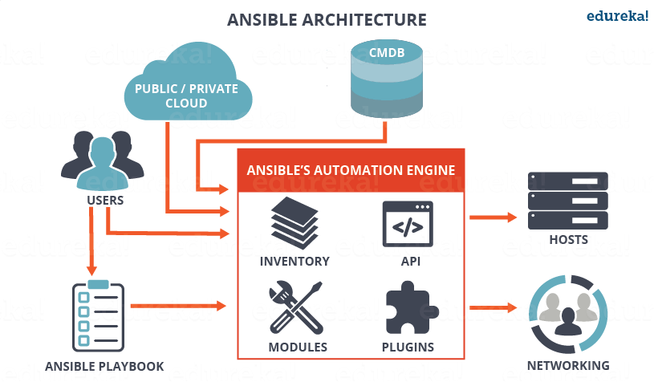

Ansible 学习笔记
- Ansible Galaxy
- 使用 Ansible 实现数据中心自动化管理 Ansible 的核心组件包括：Modules、Inventory、Playbook、Roles 和 Plugins
目录
- 单词解释
- Ansible 架构
- 配置文件 - ansible.cfg
- 主机清单 - Inventory
- 模块 - Module
- 变量 - Variable
- Ansible 命令 - Ad-Hoc Command
- 剧本 - Playbook
- 角色 - Role
单词解释
- Ad-Hoc：拉丁文常用语，意为特设的、临时的。Ansible 官方使用 Ad-Hoc Command 作为“临时命令”之意，也就是 Ansible 命令
- Tasks：任务，由模板定义的操作列表
- Variables：变量
- Templates：模板，即使用模板语法的文件
- Handlers：处理器 ，当某条件满足时，触发执行的操作
- Roles：角色
- Control node ：安装了 Ansible 的主机
- Managed nodes：Ansible 管理的网络设备或服务器
Ansible 架构

- 用户可以通过编写 Playbook 或使用 Ad-HOC 命令直接操控 Ansible，也可以通过公有、私有云或 CMDB(Configuration Management Database) 操控 Ansible
- Ansible 组成：
- Inventory - 被管理主机清单
- APIs - 提供 Ansible 与云端的传输服务
- Plugins
- Modules
- Ansible 可管理对象：主机和网络设备
配置文件 - ansible.cfg
配置文件中的几乎所有参数都可以在 Ad-Hoc 命令行和 Playbook 文件中重新赋值
配置文件加载顺序：ANSIBLE_CONFIG -> ./ansible.cfg -> ~/.ansible.cfg -> /etc/ansible/ansible.cfg
- ANSIBLE_CONFIG：首先，Ansible 命令会先检查环境变量 ANSIBLE_CONFIG，及这个环境变量将指向的配置文件
- ./ansible.cfg：其次，将会检查当前目录下的 ansible.cfg 配置文件
- ~/.ansible.cfg：再次，将会检查当前用户 home 目录下的
~/.ansible.cfg配置文件 - /etc/ansible/ansible.cfg：最后，将会检查在安装 Ansible 时自动生产的配置文件
常用配置项
[defaults]
| 配置项 | 说明 | 默认值 |
|---|---|---|
| inventory | ansible inventory文件路径 | /etc/ansible/hosts |
| library | ansible模块文件路径 | /usr/share/my_modules/ |
| remote_tmp | ansible远程主机脚本临时存放目录 | ~/.ansible/tmp |
| local_tmp | ansible管理节点脚本临时存放目录 | ~/.ansible/tmp |
| forks | ansible执行并发数 | 5 |
| poll_interval | ansible异步任务查询间隔 | 15 |
| sudo_user | ansible sudo用户 | root |
| ask_sudo_pass | 运行ansible是否提示输入sudo密码 | True |
| ask_pass | 运行ansible是否提示输入密码 | True |
| transport | ansible远程传输模式 | smart |
| remote_port | 远程主机SSH端口 | 22 |
| module_lang | ansible模块运行默认语言环境 | C |
| gathering | facts信息收集开关定义 | smart |
| roles_path | ansible role存放路径 | /etc/ansible/roles |
| timeout | ansible SSH连接超时时间 | 10 |
| remote_user | ansible远程认证用户 | root |
| log_path | ansible日志记录文件 | /var/log/ansible.log |
| module_name | ansible默认执行模块 | command |
| executable | ansible命令执行shell | /bin/sh |
| hash_behaviour | ansible主机变量重复处理方式 | replace |
| private_role_vars | 默认情况下，角色中的变量将在全局变量范围中可见。 为了防止这种情况，可以启用以下选项，只有tasks的任务和handlers得任务可以看到角色变量 | yes |
| vault_password_file | 指定vault密码文件路径 | 无 |
| ansible_managed | 定义的一个Jinja2变量，可以插入到Ansible配置模版系统生成的文件中 | Ansible managed |
| display_skipped_hosts | 开启显示跳过的主机 | True |
| error_on_undefined_vars | 开启错误，或者没有定义的变量 | False |
| action_plugins | ansible action插件路径 | 无 |
| cache_plugins | ansible cache插件路径 | 无 |
| callback_plugins | ansible callback插件路径 | 无 |
| connection_plugins | ansible connection插件路径 | 无 |
| lookup_plugins | ansible lookup插件路径 | 无 |
| inventory_plugins | ansible inventory插件路径 | 无 |
| vars_plugins | ansible vars插件路径 | 无 |
| filter_plugins | ansible filter插件路径 | 无 |
| terminal_plugins | ansible terminal插件路径 | 无 |
| strategy_plugins | ansible strategy插件路径 | 无 |
| fact_caching | 定义ansible facts缓存方式 | memory |
| fact_caching_connection | 定义ansible facts缓存路径 | 无 |
[privilege_escalation] - 权限升级
| 配置项 | 说明 | 默认值 |
|---|---|---|
| become | 是否开启become模式 | True |
| become_method | 定义become方式 | sudo |
| become_user | 定义become方式 | root |
| become_ask_pass | 是否定义become提示密码 | False |
主机清单 - Inventory
被管理主机 ( managed nodes ) 的清单，inventory 也被称做 hostfile
- inventory 是 .ini 格式编写的
- 主机清单默认路径为：
/etc/ansible/hosts - 静态主机清单：
- Ad-Hoc 命令。
ansible -i <path>或ansible-play -i <path> - 修改 ansible.cfg。设置 ansible.cfg 中
[default]下的inventory为指定hosts文件路径 - 多个主机清单文件。先创建一个
inventory/文件夹，然后将 ansible.cfg 中的inventory设置为inventory文件夹路径
- Ad-Hoc 命令。
动态主机清单：
- 可以用自定义脚本从 CMDB 系统和 Zabbix 监控系统等拉取所有的主机信息，脚本可以使用任何语言编写，但是脚本使用参数有一定的规范并且对脚本执行的结果也有要求，应用时只需要把 ansible.cfg 文件中
inventory设置为执行脚本路径即可 - 如果 inventory 文件被标记为可执行，则 Ansible 会假设这是一个动态的 inventory 脚本并且执行它而不是读取它的内容 -
chmod +x 文件名 - 动态 inventory 脚本必须支持两个命令行参数：
--host=<hostname>- 列出主机的详细信息--list- 列出群组
- 可以用自定义脚本从 CMDB 系统和 Zabbix 监控系统等拉取所有的主机信息，脚本可以使用任何语言编写，但是脚本使用参数有一定的规范并且对脚本执行的结果也有要求，应用时只需要把 ansible.cfg 文件中
静态主机清单与 动态主机清单结合使用
将动态 inventory 和 静态 inventory 放在同一目录下
在 ansible.cfg 中将
hostfile的值, 指向该目录即可；或在 Ansible 命令行使用-i参数指定目录
Inventory 行为参数
| 参数名 | 参数说明 | 默认值 |
|---|---|---|
| ansible_ssh_host | 登录主机的hostname或ip | 主机名 |
| ansible_ssh_port | ssh 目的端口 | 22 |
| ansible_ssh_user | ssh 登录使用的用户名 | root |
| ansible_ssh_pass | ssh 认证使用的密码 | None |
| ansible_sudo | 主机的sudo用户 | |
| ansible_sudo_pass | 主机的sudo密码 | |
| ansible_sudo_exe | 主机的sudo路径 | |
| ansible_connection | 连接主机的模式 | smart |
| ansible_ssh_private_key_file | ssh 认证使用的私钥 | None |
| ansible_shell_type | 主机shell类型 | sh |
| ansible_python_interpreter | 主机python解释器路径 | /usr/bin/python |
| ansible_*_interpreter | 类似python解释器的其他语言版 | None |
ansible.cfg 设置 Inventory 行为参数
可以在 ansible.cfg 的
[defaults]中改变一些行为参数的默认值:
| inventory 行为参数 | ansible.cfg 选项 |
|---|---|
| ansible_ssh_port | remote_port |
| ansible_ssh_user | remote_user |
| ansible_ssh_private_key_file | private_key_file |
| ansible_shell_type, shell 的名称 | executable, shell 的绝对路径 |
变量 - Variable
变量定义
- Ansible 变量支持布尔型、字符串、列表和字典
列表（键值）格式 :
# playbooks/group_vars/production
db_primary_host: prod.db.com
db_primary_port: 5432
db_replica_host: rep.db.com
db_name: mydb
db_user: root
db_pass: 123456
# 访问方法:
{{ db_primary_host }}
字典格式 :
# playbooks/group_vars/production
db:
user: root
password: 123456
name: mydb
primary:
host: primary.db.com
port: 5432
replica:
host: replica.db.com
port: 5432
# 访问方法
{{ db.primary.host }}
主机清单中定义变量
定义主机和群组相关变量
主机变量和群组变量
- 在主机清单文件中，只能将变量指定为布尔型和字符串
- 上面介绍的 inventory 行为参数其实就是具有特殊意义的 Ansible 变量，可以针对主机定义任意的变量名并指定相应的值
主机变量
192.168.13.12 color=green
192.168.13.14 color=red
群组变量
- ｀[
:vars]｀
[all:var]
color=green
主机变量和群组变量文件
- 可以为每个主机和群组创建独立的变量文件，使用 YAML 格式编写，可以是列表、字典格式
- 主机变量文件：
host_vars目录中寻找；比如www.xcq.com主机变量文件就是｀host_vars/www.xcq.com` - 群组变量文件：
group_vars目录中寻找；比如web群组变量文件就是group_vars/web
这个两个目录和 playbook 和 inventory 文件平级
Ansible 命令行中定义变量
ansible-playbook [xxx.yml] -e [变量名]=[值]
这样设置的变量拥有最高优先级，可以覆盖已经定义的变量
$ ansible-playbook example.yml -e token=123
Playbook 中定义变量
vars
---
- name: webserver configuration play
hosts: webservers
vars:
http_port: 80
max_clients: 200
vars_files
# playbook
---
- name: webserver configuration play
hosts: webservers
vars:
- nginx.yml
# nginx.yml
http_port: 80
max_clients: 200
facts
不同方法定义变量的优先级
ansible-playbook [xxx.yml] -e [变量名]=[值]- 这个优先级排序中没提到的其他方法
- 主机清单（在 inventory 文件或 YAML 文件定义的主机和群组变量）
- Fact
- role 的 defaults/main.yml 文件
变量使用
Playbook 中使用变量
Template 中使用变量
模块 - Module
ansible-doc -l- 列出所有模块ansible-doc <module_name>- 列出指定模块的详细说明及用法
- Bash 中的常用命令
cd、yum、apt等，在 Ansible 中就对应于模块 - Bash 中命令可以跟参数；同样，Ansible 中 module 也可以跟参数
- Ansible 自带的模块都是用 Python 编写的
- Ansible 提供了一些常用功能的模块,用户也可以使用 Python 自定义模块
命令行中使用 module
ansible <host-pattern> -m <module_name> -a '<module_args>'
Playbook 脚本中使用 module
- tasks 中的每一个 action 都是对应 module 的一次调用
<module_name>: <module_args>
tasks:
- name: ensure apache is at the latest version
yum: pkg=httpd state=latest
Ansible 管理被控端的两种方式

Ad-hoc command 和 playbook 可以看成是 Linux 下的命令和 shell 脚本之间的关系
Ansible 命令 - Ad-Hoc Commands
常用命令
ansible ansible-config ansible-console ansible-galaxy ansible-inventory ansible-playbook ansible-pull ansible-vault
Ansible 命令执行过程
- 加
-vvv可查看执行过程
1、加载配置文件，默认是 /etc/ansible/ansible.cfg
2、加载模块文件
3、生成对应的临时 py 文件，并将文件传输到被控主机的对应用户 ~/.ansible/tmp/ansible-tmp-xxx/xxx.py
4、被控主机 py 文件加执行权限（ +x ）
5、执行 py 文件并返回结果
6、删除本地和被控主机上的临时 py 文件，sleep 0 退出
剧本 - Playbooks
Playbook 语法 - YAML
- 一个Playbook 包含一个或多个 Play
- 一个Play 必须包含 hosts 和 tasks，也可能有 variables、roles、handlers 等
- 每一个 task 只能包含一个模块
- playbook 其实就是一个字典列表，也就是一个 playbook 就是一个 play 列表
---
- name: webserver configuration play
hosts: webservers
vars:
http_port: 80
max_clients: 200
tasks:
- name: ensure that apache is installed
yum: name=httpd state=present
- name: write the apache config file
template: src=httpd.j2 dest=/etc/httpd.conf
notify:
- restart apache
- name: ensure apache is running
service: name=httpd state=started
handlers:
- name: restart apache
service: name=httpd state=restarted
当时用 Playbook 进行虚拟化环境初始化时候，可以分为两个 Play 进行。第一个 Play 用于本机运行和创建主机，第二个 Play 用于配置主机